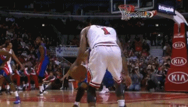
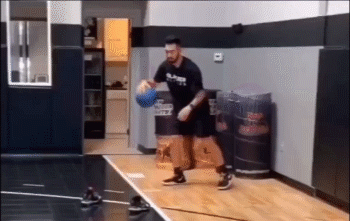
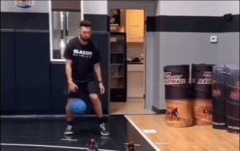

变向突破
变向突破是一项非常有效的篮球进攻技术。它可以帮助球员在防守中创造机会,突破对方防线。这需要良好的手眼协调能力和爆发力。

体前变向，提前变向最需要的就是进攻的空间，右手变向，右脚往前跨步，左脚蹬地增加爆发力和启动速度！拉球的同时重心降低。
当防守球员堵住你变向路径时，例如往左边突破，首先右手持球，防守人堵住路径，高手变向，右脚跨过防守人并卡住身位， 过掉防守人。护球手始终要抬起来。
急停变向，在用这招之前，可以先做一些顺势动作，先做一个胯下，球回到手中时右脚迅速蹬地往前突破。右脚落地时左脚蹬地往右边突破。
